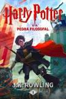
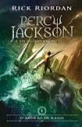
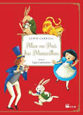
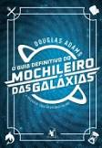

Harry Potter e a Pedra Filosofal

Sinopse
Harry Potter é um garoto cujos pais, feiticeiros, foram assassinados por um poderosíssimo bruxo quando ele ainda era um bebê. Ele foi levado, então, para a casa dos tios que nada tinham a ver com o sobrenatural. No dia de seu aniversário de 11 anos, Harry descobre sua verdadeira história e seu destino: ser um aprendiz de feiticeiro até o dia em que terá que enfrentar a pior força do mal, o homem que assassinou seus pais. Potter fica sabendo que é a única pessoa a ter sobrevivido a um ataque do tal bruxo do mal e essa é a causa da marca em forma de raio que ele carrega na testa. Ele não é um garoto qualquer, ele sequer é um feiticeiro qualquer; ele é Harry Potter, símbolo de poder, resistência e um líder natural entre os sobrenaturais.
Fonte: Google Books
| Data |
Autor |
Idioma Original |
Gêneros |
Número de Páginas |
Editora |
| 26 de junho de 1997 |
J.K. Rowling |
Inglês |
Romance, Literatura infantil,Literatura fantástica,Alta fantasia |
254 |
Pottermore Publishing |
O Senhor dos Anéis: A Sociedade do Anel

Sinopse
A Sociedade do Anel O volume inicial de O Senhor dos Anéis, lançado originalmente em julho de 1954, foi o primeiro grande épico de fantasia moderno, conquistando milhões de leitores e se tornando o padrão de referência para todas as outras obras do gênero até hoje. A imaginação prodigiosa de J.R.R. Tolkien e seu conhecimento profundo das antigas mitologias da Europa permitiram que ele criasse um universo tão complexo e convincente quanto o mundo real. A Sociedade do Anel começa no Condado, a região rural do oeste da Terra-média onde vivem os diminutos e pacatos hobbits. Bilbo Bolseiro, um dos raros aventureiros desse povo, cujas peripécias foram contadas em O Hobbit, resolve ir embora do Condado e deixa sua considerável herança nas mãos de seu jovem parente Frodo. O mais importante lega...
Fonte: Google Books
| Data |
Autor |
Idioma Original |
Gêneros |
Número de Páginas |
Editora |
| 29 de julho de 1954 |
J.R.R. Tolkien |
Inglês |
Literatura fantástica,Alta fantasia, Ficção de aventura,Romance de cavalaria, Fantasia heroica |
576 |
HarperCollins Brasil |
Percy Jackson e o Ladrão de raios

Sinopse
Primeiro volume da saga Percy Jackson e os olimpianos, O ladrão de raios esteve entre os primeiros lugares na lista das séries mais vendidas do The New York Times. O autor conjuga lendas da mitologia grega com aventuras no século XXI. Nelas, os deuses do Olimpo continuam vivos, ainda se apaixonam por mortais e geram filhos metade deuses, metade humanos, como os heróis da Grécia antiga. Marcados pelo destino, eles dificilmente passam da adolescência. Poucos conseguem descobrir sua identidade. O garoto-problema Percy Jackson é um deles. Tem experiências estranhas em que deuses e monstros mitológicos parecem saltar das páginas dos livros direto para a sua vida. Pior que isso: algumas dessas criaturas estão bastante irritadas. Um artefato precioso foi roubado do Monte Olimpo e Percy é o pri...
Fonte: Google Books
| Data |
Autor |
Idioma Original |
Gêneros |
Número de Páginas |
Editora |
| 28 de junho de 2005 |
Rick Riordan |
Inglês |
Literatura fantástica,Alta fantasia,Romance,Mitologia Grega,Fantasia,Ficção Juvenil |
400 |
Intríseca |
Alice no País das Maravilhas

Sinopse
A garota Alice vê um coelho branco entrar em uma toca. Vai atrás dele e chega ao País das Maravilhas. Ela muda de tamanho muitas vezes e conhece criaturas esquisitas, como a Lagarta, a Duquesa, o Gato de Cheshire, a Lebre de Março, o Chapeleiro Maluco e o Rei e a Rainha de Copas. Tradução de Ligia Cademartori para o clássico de Lewis Carroll.
Fonte: Google Books
| Data |
Autor |
Idioma Original |
Gêneros |
Número de Páginas |
Editora |
| novembro de 1865 |
Lewis Carroll |
Inglês |
Literatura infantil,Literatura fantástica,ficção absurdista,Fantástico |
112 |
FTD Educação |
Guia do Mochileiro das galáxias

Sinopse
Com introdução inédita do autor e prefácio de Neil Gaiman Os Cinco Livros da Cultuada Série O Mochileiro das Galáxias reunidos em um único e definitivo volume
Com mais de 15 milhões de exemplares vendidos, a saga de Arthur Dent pela Galáxia conquistou fãs pelo mundo inteiro. O humor ácido e as tramas surreais de Douglas Adams se tornaram ícones de uma geração e seguem fascinando leitores de todas as idades. Reunindo todos os livros da série em uma edição de luxo, O Guia Definitivo do Mochileiro das Galáxias vai levar você por aventuras improváveis. Pegue sua toalha, divirta-se e não entre em pânico!
O Guia do Mochileiro das Galáxias – Segundos antes de a Terra ser destruída, Arthur Dent é salvo por Ford Prefect, um E.T. que fazia pesquisa para a nova edição de O...
Fonte: Google Books
| Data |
Autor |
Idioma Original |
Gêneros |
Número de Páginas |
Editora |
| 12 de outubro de 1979 |
Douglas Adams |
Inglês |
Fiicção científica,Romance,Humor,Ficção Humorística,ficção científica cômica |
784 |
Arqueiro |